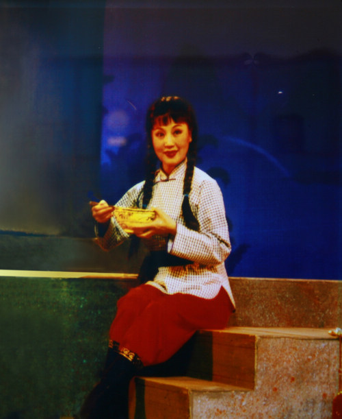

桂剧是广西主要地方剧种，有着较悠久的历史，约在明代中叶便开始发端，它以弹腔为主，兼唱高腔、昆腔、吹腔及杂腔小调等五种声腔艺术。桂剧用桂林方言演唱，唱腔委婉动人、清澈明亮，表演侧重做工，注重以细腻而富于生活气息的表演手法塑造人物，具有浓郁乡土气息。
桂剧的传统剧目，艺人中间素有"大小本杂八百出"之说，其中约 80 %为弹腔剧目。大部分是历史故事，多在庙会草台连本演出，表演粗犷质朴。如刀马旦的"马步"和武生的"紫金冠",特色显着，为人称道。在城市演出，则以"三小戏"为主，表演细腻，造诣较高。

桂剧的艺术风格犹如桂林的山水，清新、秀丽、细腻、优美，它节奏平和，含蓄有味，没有火爆的武打场面，不追求花里胡哨的噱头。欧阳予倩在改革桂剧之初，也曾经指出：桂戏"好比一个内地姑娘，没有烫过头发，没有穿过高跟鞋，天真浪漫，得其自然之美。"
桂剧汲取祁剧、京剧、昆曲等剧种的表演艺术，以"小生、小旦、小丑"三小戏为主，尤以做工传神见长。桂剧的演员，都是擅于观察生活、提炼生活的高手。1952年9月，中南戏曲会演在武汉举行，广西代表团团长秦似在回忆尹羲当年演出时这样写道：上到《拾玉镯》时，已是（晚上）十时左右了，我生怕观众已疲劳，效果受影响。殊不知孙玉姣一上场，尹羲身上所带有的桂剧三小戏那种活泼气氛，便压住了全场，她只唱了一句"孙玉姣，坐草堂，自思自想，"便做针线，这是十分冷场的，台上只有孙玉姣一个人，又只是做针线这样一个寻常的动作，是很难于抓住观众的，可是，这个场面持续了约三分钟，台下鸦雀无声。孙玉姣抽纱、选线、破绒线、绣花等一连串细腻的表演，观众都被引入戏的境界中去了，接着，是孙玉姣听见鸡叫，去数鸡的动作，放鸡、唤鸡、喂鸡、数鸡、赶鸡，寻找那只可怜的小雏家，并将雏鸡捧过门槛，动得那么自然，那么美，下面的田汉和荒煤都带头鼓掌了。田汉自己也曾说过，他看过很多剧种演过《拾玉镯》这出戏，桂剧比其他剧种演得好，表演逼真，生活气息浓。
桂剧的主要观众是农民和中小城市市民，他们需要在戏剧中看到自己的影子，因此，桂剧具有较浓厚的生活气息，具有通俗性。戏剧是需要同观众产生交流的，京剧往往是喝彩，昆曲是击节，桂剧的观众则要从剧中寻找他们熟悉的生活。因此，一个剧种的特色在某种意义上可以说是观众的特色。就表演程式而言，桂剧较之京昆，恰是正规军与游击队，桂剧不够严谨，不够规范，也较少观赏价值很高的艺术技巧，这是她的短处，但也是她的长处，使她少受程式的约束而易于接近群众。桂剧是不规范，可是，人们都承认京剧的《拾玉镯》不如桂剧。桂剧的艺术特色也在于她的生活气息。
桂剧不只表演上生活气息浓厚，文辞也雅俗共赏。比如桂剧《西厢记》里面的唱词"闷沉沉一处来，哭啼蹄独自归。夕阳古道衰柳堤，瑟瑟秋风送马嘶，人去也，一鞭残照里，遍人间烦恼满胸臆，这大小车儿，大小车儿如何载得起！"桂剧《西厢记》的语言带有浓厚的文学色彩，还注重符合桂剧演出的语言，成为雅俗共赏的改编之作。夏衍在桂林观看《西厢记》时曾对作者说："剧本的文学色彩很好，是迄今为止最好的改编本。"